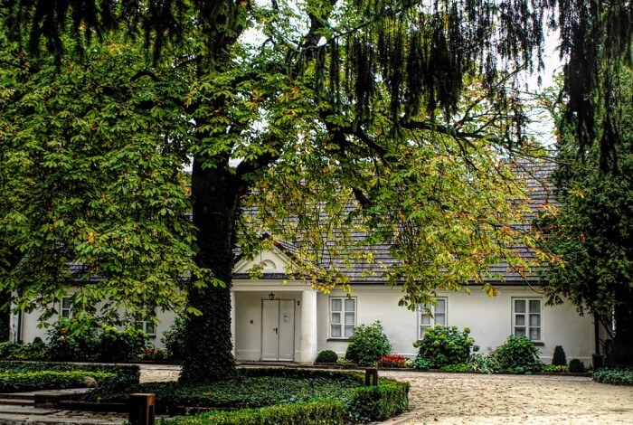

Fryderyk Franciszek Chopin urodził się 1 marca 1810 roku, na Mazowszu, we wsi Żelazowa Wola koło Sochaczewa. Fryderyk urodził się jako drugi z czwórki dzieci. Miał trzy siostry: Ludwikę, Izabelę i Emilię. Fryderyk Chopen chorowal na grozna chorobę jaką była gruźlica.
